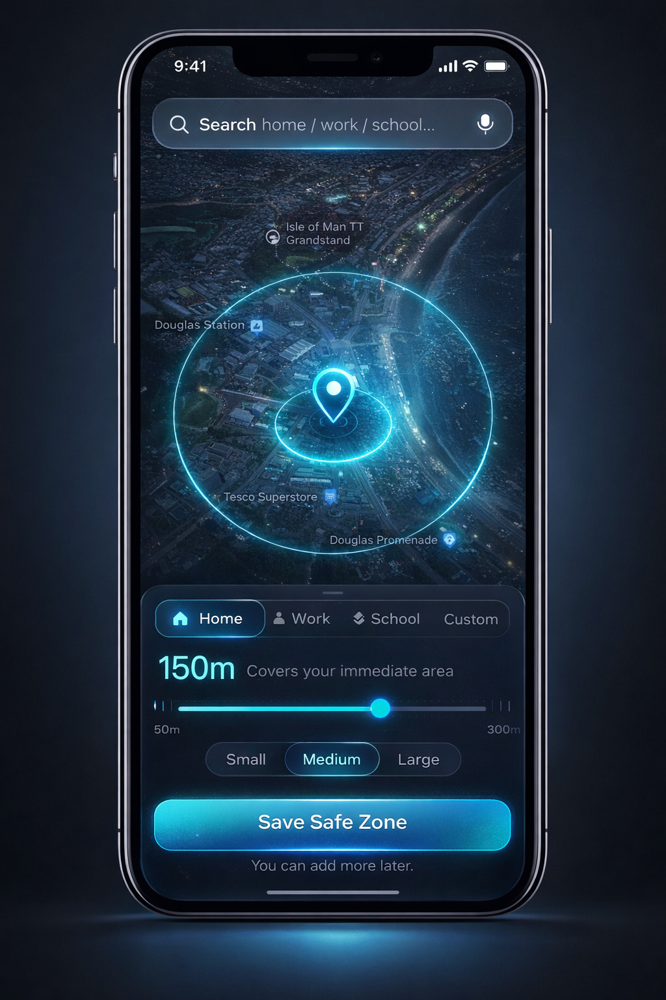

Your AI Guardian Angel
that acts when you can’t.
StayClose is a life-saving safety app built to protect the people who matter most. It can detect danger, send instant SOS alerts, track loved ones in real time, start emergency recording, and preserve vital evidence when seconds count and you cannot act for yourself.
AI Guardian Active
Monitoring distress signals, route changes, emergency gestures and live safety status.
Share GPS instantly
Silent emergency trigger
Built for the moments when panic, silence and lost time can change everything.
StayClose combines intelligent detection, emergency response automation, guardian tracking and evidence protection into one powerful system designed for real-world danger.
Always watching for danger
Continuous guardian monitoring for voice distress, emergency triggers, route changes and live safety signals.
Critical evidence layers
Video, audio and live location history can be captured and preserved instantly when an emergency begins.
One intelligent safety system
SOS, guardian tracking, distress detection, emergency recording and secure evidence storage in one app.
Every feature is built to protect faster, smarter and more effectively.
StayClose is designed to act when someone is frightened, under pressure, physically unable to respond, or in too much danger to explain what is happening.
One-Tap SOS + Live GPS
Send your exact location to trusted contacts instantly so they can see where you are and respond immediately.
Silent Shake Alert
Trigger an emergency alert without speaking, unlocking your phone or drawing attention to yourself.
AI Voice & Scream Detection
The AI Guardian listens for distress patterns, panic and screams so it can react when a user cannot.
Instant Emergency Recording
Automatic video and audio capture can begin immediately to preserve what happened in real time.
Route Learning & Deviation Alerts
StayClose can understand normal movement patterns and flag route changes when something feels wrong.
Guardian Tracking for Loved Ones
Parents, partners and trusted contacts can stay informed with live location visibility and emergency notifications.
See how StayClose looks, feels and responds in an emergency.
Add your own demo video and app imagery below by uploading the files into the same GitHub folder as this page.

Emergency protection
Use this image for your strongest app mockup, alert screen, or cinematic safety visual.

Guardian reassurance
Use this image for live tracking, loved-one monitoring, or your best promotional app screen.
The Vault turns emergency moments into usable evidence.
StayClose can capture video, audio and location data during emergencies and preserve them in an encrypted evidence vault for investigation, incident review and critical reporting.
Automatic emergency recording
Video and audio can start the moment danger is detected or manually triggered.
Investigation-ready storage
Time-stamped clips, location history and supporting metadata are held in one secure place.
Critical proof preservation
Designed to protect evidence that could otherwise be lost in chaos, fear or delay.
Protection for the people most likely to need help fast.
StayClose is designed for everyday life, real emergencies and vulnerable moments where speed, visibility and smart response matter most.
Women walking alone
Silent alerts, distress detection and evidence capture can activate in seconds without drawing attention.
Children and families
Parents can track loved ones, receive alerts and gain reassurance in situations where every second matters.
Elderly and vulnerable users
StayClose provides an additional safety layer for people who may need help but cannot always react quickly.
Common questions about how StayClose protects people.
Bring a life-saving guardian into the moments that matter most.
StayClose is more than an app. It is a real-time guardian system designed to protect people, alert loved ones, record what matters and respond when seconds count.